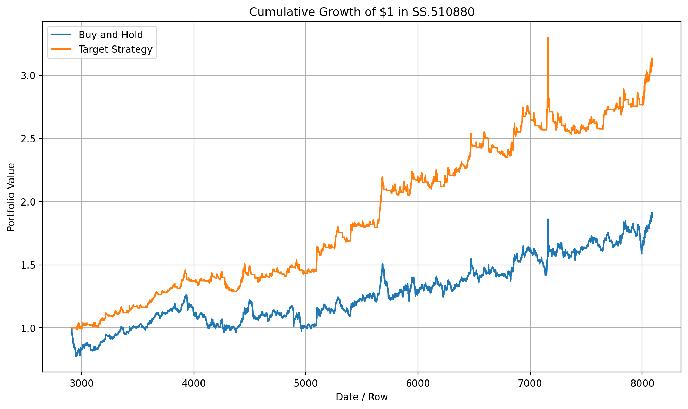

DivETF1X策略监控仪表板
最后更新:
加载中...
刷新数据
策略绘图与回测表现
动态图
静态图
DivETF1X 动态K线图
开始日期:
结束日期:
筛选
清除
动态数据最后更新:
-

图片最后更新:
-
策略说明
DivETF1X 单一策略
指标说明:
Decision = 1 表示做多，Decision = 0 表示空仓。
动态日度指标数据
开始日期:
结束日期:
筛选
清除
Decision = 1 (做多)
Decision = 0 (空仓)
组合绩效指标
当前策略状态
数据源信息
wdata.csv
未加载
decsw.csv
未加载
hplot.png
未加载
metrics.csv
未加载
info.json
未加载
数据更新频率:
每交易日开盘收盘
下次更新:
每交易日开盘收盘